Inspirationswoche
Im Sinne von Research through Design, habe ich mir für diese Woche vorgenommen, kurze Designsprints zu machen, bei welchen ich pro Sketch jeweils mit nur einer Form arbeite. Das Ziel ist nicht ein superschönes Endprodukt, sondern vielmehr das Experimentieren, lernen, neue Funktionen kennenlernen und neue Ideen zu entwickeln. Die Sketches sind teilweise Datengetrieben, teilweise reine Gestaltungsübungen.
Diese kurzen Sprints haben mir extrem Freude bereitet! Dank des lokal eingebetteten CDN konnte ich dabei offline arbeiten. Dies hat extrem geholfen um selbst mehr nachzudenken und nicht sofort eine KI zu fragen, was zu einem viel tieferen Verständnis von p5.js führte. Auch dass kein Druck herrschte, perfekte Ergebnisse zu erzielen, machte die ganze Arbeit viel entspannter. So kann auch ein Fehler zu einem schöneren und interessanterem Output führen.
1. Sprint
Diese Woche will ich den AxiDraw Penplotter zum laufen bringen, erste Tests machen und mich generell mit dem Plotter sowie Inkscape wieder vertraut machen. Zudem setze ich die Webseite, welche als Dokumentation zum Modul dienen soll auf und verbinde es mit meinem Git Account. Dadurch kann ich anschliessend eine alleinstehende Webseite daraus bauen. Gleichzeitig will ich damit meine Web-Entwicklung Skills stärken und versuchen, die Webseite nachhaltiger zu bauen.
Geplottet mit: STABILO PERMANENT F
Unterlage: 80g Druckpapier
Stift senkrecht eingespannt.
Erster Testversuch. Der Plot besteht aus einer in Python ausgespielter Datenvisualisierung, welche mithilfe von Pandas und Vegas-Altair erstellt, und als SVG ausgespielt wurde. Die Grafik selbst hat super funktioniert, jedweilige Beschriftung wurde jedoch weggelassen. Darauf muss ich mich in Zukunft achten, wenn ich in Python eine Visualisierung exportiere.
Spannend ist auch zu sehen, wie in der mitte, unten ein Teil nach wie vor Nass aussieht, obwohl alles bereits trocken ist. Hier ist der Plotter sehr oft über die selbe Stelle Gefahren.
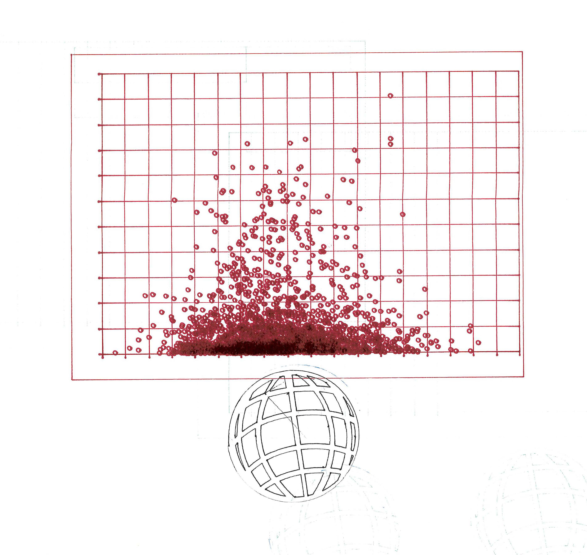
Geplottet mit: ????????? (stift).
Unterlage: 80g Druckpapier
Stift senkrecht eingespannt.
Text ist ein spezialfall für den Plotter. Bei normalen Schriften wird immer die Outline gezeichnet, da diese die Pfade bilden. Abhilfe verschaffen hier Hershey-Fonts, welche komplett auf Pfaden basieren und so ermöglichen, dass der Plotter mit einem Strich die Buchstaben zeichnet. In diesem Fall habe ich eine Integrierte Hershey-Font vom AxiDraw Plotter verwendet, welcher aber leider auch Outlines gezeichnet hat.
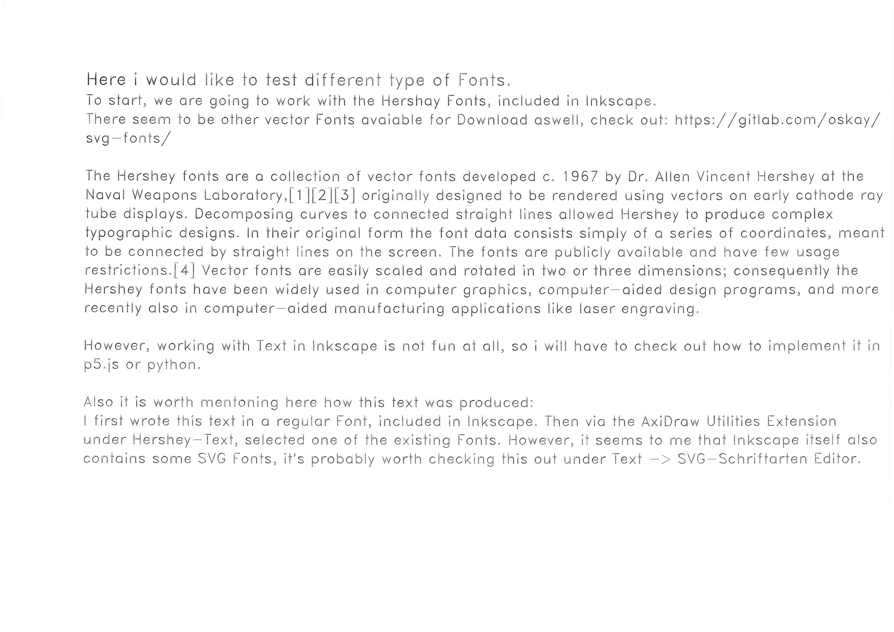
Geplottet mit: Mark Twain Füllfederhalter.
Unterlage: 80g Druckpapier
Stift angewinkelt eingespannt.
Auch hier besteht die Schrift nicht aus einer Linie, sondern teilweise mehreren, was aber durch die Gotische Schrift und den fix eingespanntent Füller bedingt ist. Der Füller erzeugt hier einen sehr schönen Effekt: Durch die Flüssige Tinte wird die Schrift viel lebendiger, da sie nicht überall schön gleichmässig viel Tinte hinterlässt.
Lohnt sich, weiter damit zu experimentieren
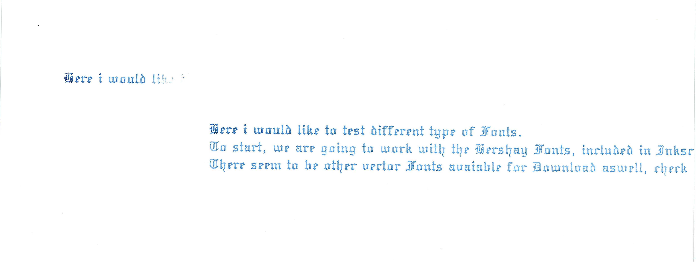
Geplottet mit: Stahl-Stift.
Unterlage: Offset-Druckplatte
Stift senkrecht und angewinkelt eingespannt.
Bei diesem und den folgenden zwei Beispielen wollte ich testen, wie gut man mit dem AxiDraw Plotter oberflächen einritzen kann. Klappt das, könnte man dadurch den entstandenen Plot verweden, um damit Tiefdrucke zu schaffen. Leider hat der AxiDraw Plotter nicht genügend Kraft um tief in die Oberfläche zu gelangen.
Inhaltich sehe ich im Arbeiten mit diesem Material jedoch eine grösse Aussagekraft für die BA-Arbeit: Genau wie das Internet vergisst dieses Material nicht, im vergleich zu Papier, welches viel schneller verfallen wird.
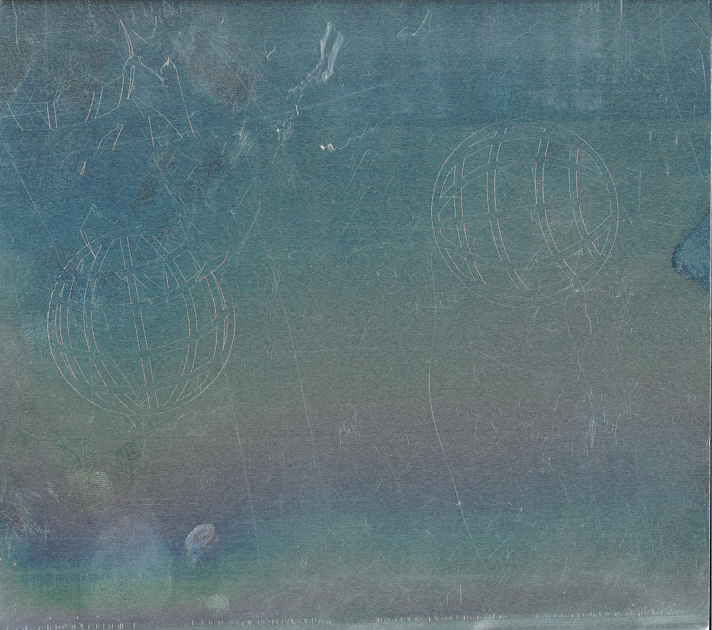
Geplottet mit: Stahl-Stift.
Unterlage: Kupferplatte
Stift senkrecht und angewinkelt eingespannt.
Hier hatte ich erwartet, dass es relativ gut funktionieren und eine tiefere Furche geben würde, da es ein weiches Metall ist. Aber auch hier scheint der AxiDraw Plotter zu wenig kraft zu haben. Funktionierte von allen 3 Tests tatsächlich am schlechtesten. Spuren sind kaum erkennbar.
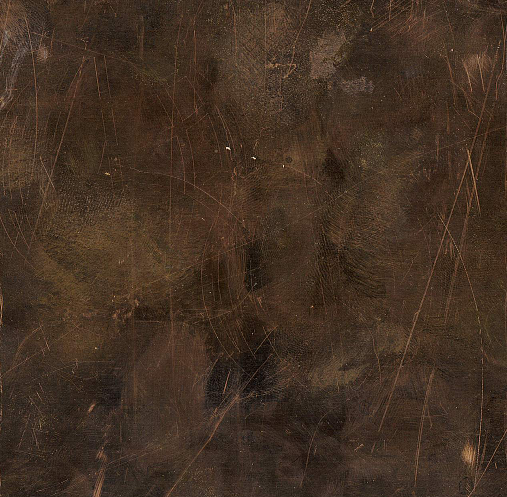
Geplottet mit: Stahl-Stift.
Unterlage: Stahlplatte
Stift senkrecht und angewinkelt eingespannt.
Obwohl die Platte schon stark verkratzt war, sind die Plots doch relativ gut erkennbar. Im Vergleich zur Offset-Platte sind teilweise jedoch stärkere Abweichungen vom Pfad erkennbar.
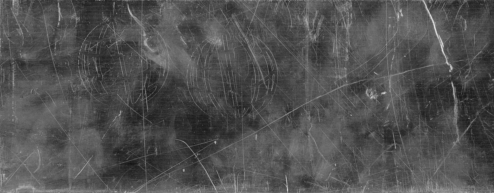
HIGHRES
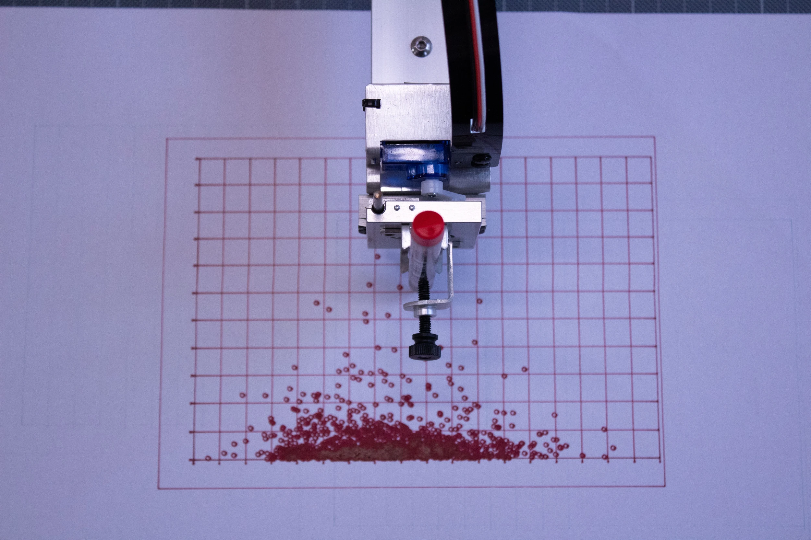
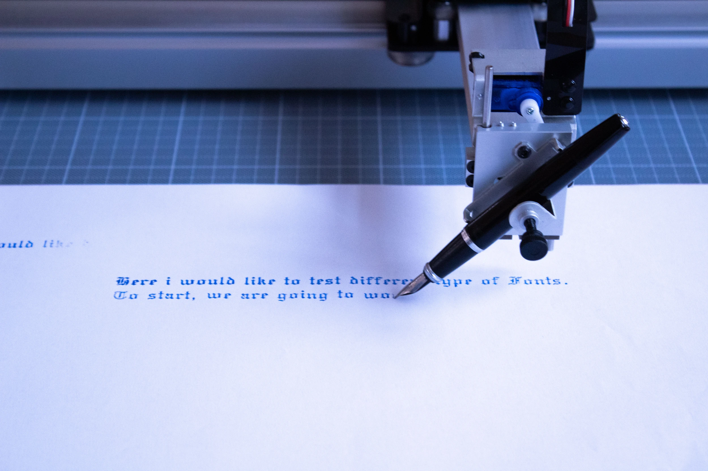
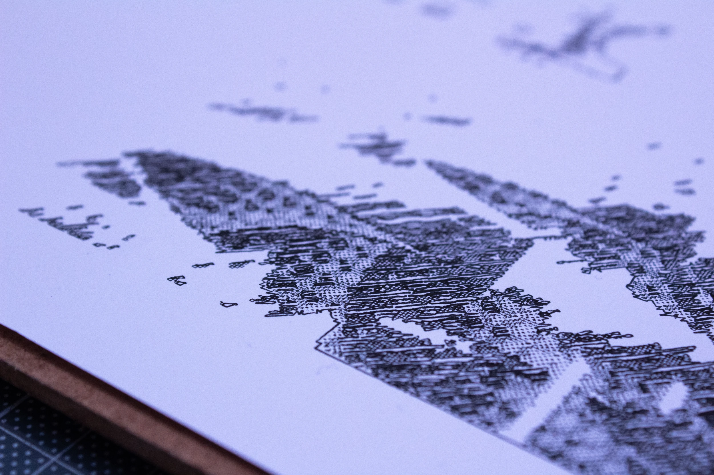
Pen Plot auf Druckpapier
Plotten mit Füllfederhalter
Nahaufnahme
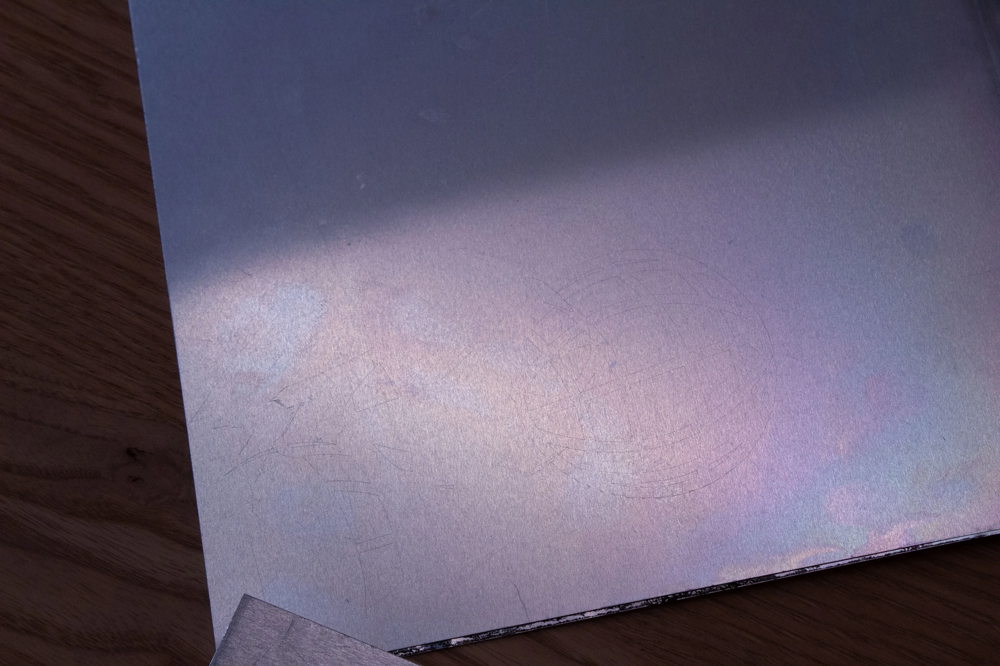
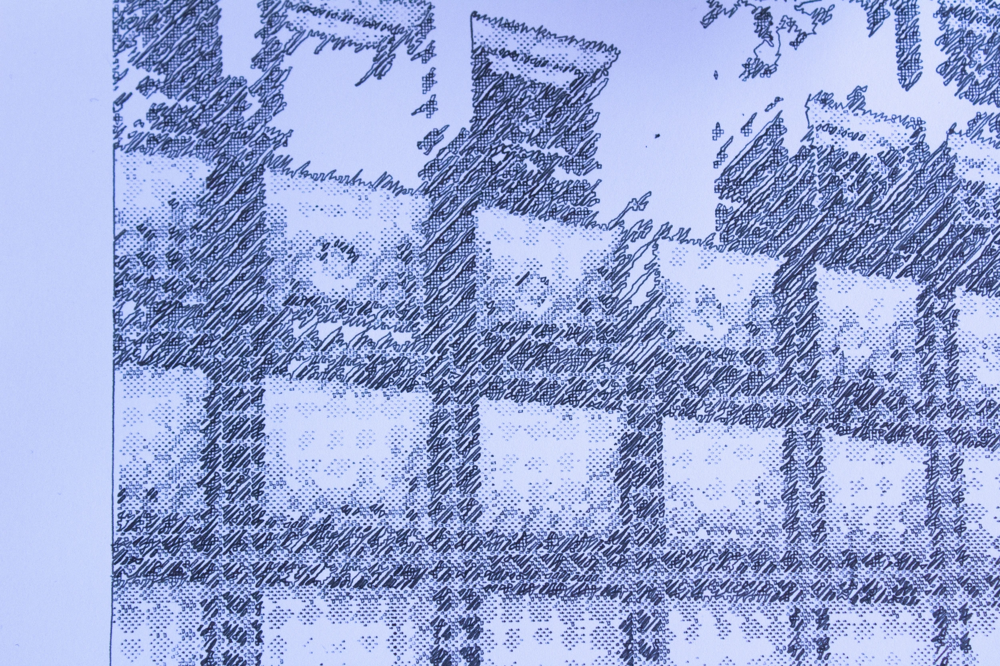
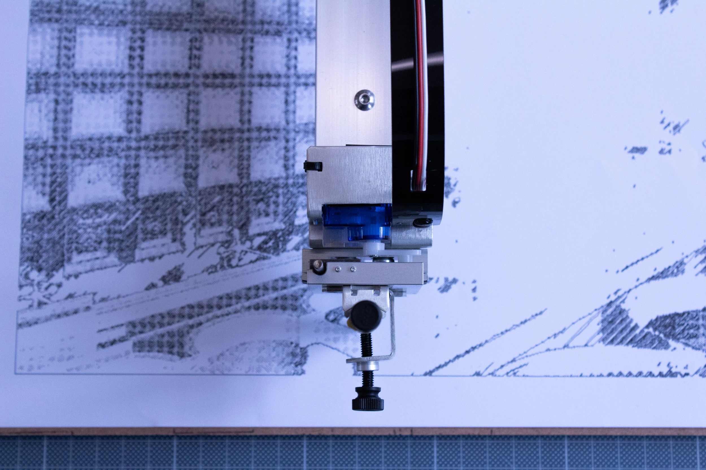
Eingeritztes Metall
Nahaufnahme
Pen Plot Prozess
Reflexion 1. Sprint
Was war mein Sprintziel und habe ich es erreicht?
Welche Vignetten sind entstanden?
Was habe ich über meinen Skill gelernt?
Was hat nicht funktioniert oder blockiert mich?
Was habe ich aus dem Mentorat mit dem Fachmentor mitgenommen?
Was ist mein Sprintziel für die nächste Woche?
Mein Ziel war es, mich wieder mit dem PenPlotter und den dazugehörigen Programmen vertraut zu machen und die Dokumentations-Website auzusetzen. Das habe ich beides erreicht.
Eine Vignette sind die unterschiedlichen Materialtests. Hier habe ich unterschiedliche Stifte sowie verschiedene Unterlagen untersucht. Eine weitere Vignette bestand aus der Schrift. Diese wird von einem Penplotter stets als Outline gelesen, daher braucht es hier eine spezielle Art von Schriften.
Pfad optimierung muss auf jeden Fall gecheckt werden, insbesondere bei grösseren oder sehr detailierten Plots.
Das kann extrem Zeit sparen, allerdings kann auch eine gewisse Wirkung der Performance verloren gehen. Hershey Fonts sind sehr spannend weiter zu untersuchen.
Das Einritzen in die Metalle hat aufgrund unzureichender Kraft vom AxiDrawer leider nicht so gut geklappt. Glücklicherweise kann ich nächste Woche in der Digitale Fabrikations Werkstätte eine zum Pen Plotter umgebaute CNC Maschine ausprobieren, welche über viel mehr Kraft verfügt
Abgesehen vom PenPlotter selbst kann man viel mit der Steuerung/dem Input experimentieren. Hier habe ich noch ein extrem grosses Feld offen, was mir wiederum neue möglichkeiten schafft.
Nächste Woche will ich die umgebaute CNC Maschine austesten und gleichzeitig erste Versuche unternehmen, den AxiDraw Plotter anderstweitig anzusteuern, beispielsweise per Terminal oder allenfalls schon mit G-Code.
2. Sprint
allo